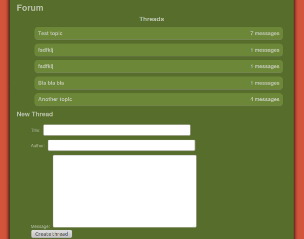
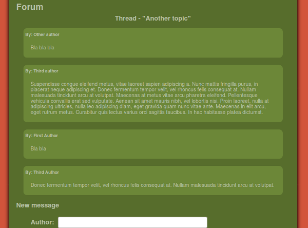

Backbone.js allows to implement the whole MVC pattern on the client, leaving the server to do what he knows best: exposing a set of well-defined REST interfaces, which the client queries when he needs to fetch or update some information. No need to split the HTML rendering between the server templates and the client-side javascript.
It's not only cleaner, it's also an excellent architecture to make responsive applications. Less information needs to be exchanged with the server - the formatting (views and controllers) being on the client, you only need to exchange the data being manipulated on the REST interfaces.
No full page reload - the server sends a static HTML file upon the first request, then the JS client handles the interaction with the user, only remodeling the portions of the DOM that changes between pages. And, better still, Backbone.js takes care of a large part of the work required to synchronize data with the server. Sweet!
However, when I recently started to learn about Backbone, I realized it doesn't help to handle relationships between models. Most non-trivial applications need this - forum threads each have a series of comments, billing invoices have several items to charge for...
If you're reading this, you've probably found out about backbone-relational after reading a few threads. But the documentation is sparse, and it's hard to see how to use it practically. How do you structure your views to represent the relations between models? How do you update or push relational models to their corresponding REST APIs?
This tutorial attempts to answer that - showing you, step by step, how to structure a sample application (a simplistic forum), using Backbone-relational to expose inter-dependent models from a set of REST APIs.
Note that this not meant to be a complete tutorial on Backbone.js, it is more a practical HOWTO on how to proceed with nested relationships once you've understood the basics. You may want to read a Backbone.js tutorial to learn about Backbone.js' models, views, routers and collections. Maybe also have a quick look at the TODO sample application to get a feel of how code based on Backbone looks like - it is simpler as it doesn't use relational model and doesn't attempt to synchronize with REST services.
Another great source of information is the source code of Backbone.js itself, which is short, readable and extensively annotated. Whenever in doubt, don't hesitate to dig in.
Warning: I'm new to Backbone, so don't expect a definitive resource. I merely attempted to provide the tutorial that I wish I had found when I first tried Backbone-relational. If you notice mistakes, or know better techniques than what is explained here, please leave a comment or make a push request on the project page. Thanks!
To demonstrate how Backbone-relational allows you to define relationships between models, and how to sync the data with the server in this case, we're going to look at a simple forum application. It should allow to create forum threads (topics) and list the threads that have been created, as well as post messages in each thread.

Fig 1 - Threads list

Fig 2 - Contents of a thread
Although simple enough for the scope of this tutorial, the fact that each thread should be able to contain several messages is a good use case for Backbone-relational - one of those fairly common situation where you want to create a one-to-many relationship between two models.
Backbone-relation supports other types of relationships, one-to-one and many-to-many - once you have been through this tutorial, using those other types of relationships should be straightforward. Refer to the Backbone-relational documentation for more information.
The application is available via git, if you don't want to bother copy-pasting : )
$ git clone git://github.com/antoviaque/backbone-relational-tutorial.git
A sample implementation of the web service providing the REST interfaces is provided in the tutorial code. The server side is out of the scope of this tutorial, so I won't say much about it. If you're interested in learning more on this part, there are a lot of resources about Node.js, Restify, MongoDB and Mongoose you can refer to.
To get the server-side to work, you need to install Node.js (tested on 0.6.12), either from a package manager, or from source:
$ wget http://nodejs.org/dist/v0.6.12/node-v0.6.12.tar.gz
$ tar xvzf node-v0.6.12.tar.gz
$ cd node-v0.6.12
$ ./configure
$ make
$ sudo make install
Then install MongoDB - on a Debian/Ubuntu:
$ sudo apt-get install mongodb-server
$ sudo /etc/init.d/mongodb start
Use NPM to checkout the required packages
$ npm install
The node.js dependencies are already included in the node_modules/ directory, so all you should need once Node and mongodb are installed is to run:
$ node app
It will start a node instance on the port 3001.
static/ subdirectory on the root folder (loading index.html when you access http://localhost:3000/ or any URL starting with http://localhost:3000/thread/);http://localhost:3000/api to the node server at http://localhost:3001/static/index.html: Includes all the base HTML structure we'll find on all pages, along with the templates for each of the views. You'll notice that I use Handlebars as the template engine, rather than Underscore's default one, but you should be able to achieve the same results with any of the javascript templating engines around - just pick your favorite.static/js/forum.js: Defines a $.forum object, which contains all the application objects. Some developers chose to assign them to the window object, or define them as globals. Defining a specific array allows to isolate ours objects on a dedicated namespace.app.js and models.js: Node.js application files - serves the REST API requests and connects to the MongoDB database.We're defining two models, Thread and Message, a Thread being able to contain multiple Messages.
$.forum.Message = Backbone.RelationalModel.extend({
urlRoot: '/api/message',
idAttribute: '_id',
});
The Message model, the most simple. Note that we're extending Backbone.RelationalModel rather than BackboneModel, to take advantage of the extra features Backbone-relational. We're just telling Backbone where to find the corresponding resource on the server (urlRoot), and what attribute the server is using to uniquely identify each message (idAttribute).
The REST interface on the server is at /api/message, and allows to POST a message of the following JSON format:
{
"author": "Author Name",
"text": "The message",
"thread": "thread_id"
}
The thread attribute will be automatically defined by Backbone-relational, and will contain the _id attribute of the Thread model defined below. It allows the webservice to know which thread the message belongs to.
If the request is successful, the server returns the same object, to which it adds the unique _id attribute used by the database to identify it.
For the simple forum we're developing for this tutorial, we only need to define a POST interface. It allows to add new message objects to the database - this will come handy when you'll be visiting a given thread and will want to post a reply to the initial post. We will be GETting the message objects currently in the database from the /api/thread/ interface defined below. If we were implementing a full-fledged application, we would define all the methods: GET to retreive individual message objects, PUT to update an existing message, DELETE, etc.
$.forum.Thread = Backbone.RelationalModel.extend({
urlRoot: '/api/thread',
idAttribute: '_id',
relations: [{
type: Backbone.HasMany,
key: 'messages',
relatedModel: '$.forum.Message',
reverseRelation: {
key: 'thread',
includeInJSON: '_id',
},
}]
});
The relations option comes from Backbone-relational, and allows to specify how the Thread objects relate to the Message objects:
type: Backbone.HasMany: Each Thread can contain references to multiple Messages.key: 'messages': The name of the attribute of Thread objects containing the external references. Thread.messages will contain an array of Messages.relatedModel: '$.forum.Message': The model being referenced.reverseRelation.key = 'thread': The reverse reference to the Thread object, from each of the Message objects contained. For example, if thread.messages = [message], then message.thread will contain a reference to the thread object.reverseRelation.includeInJSON = '_id': Tells Backbone-relational to store the value of one of the Thread attributes in message.thread, rather than a reference to the object itself. Here, if thread._id = '123', then message.thread will contain '123'.The REST interface on the server is at /api/thread/, and allows to GET a thread object along with all its messages by specifying its id (/api/thread/456), using the following JSON format:
{
"_id": "456",
"title": "The thread title",
"messages": [
{
"_id": "123",
"author": "Author Name",
"text": "The message"
}, {
"_id": "124",
"author": "Second Author Name",
"text": "The reply to the previous message"
}
]
}
The messages attribute contains a list of all the messages contained in the thread. The messages objects are expanded (it's not just a reference to their ids), to allow to get the whole content of a thread in one request.
Backbone-relational will automatically assign each of the array elements of the message attribute to a separate Message object, and set the reverse reference (message.thread) to the value of the thread._id attribute (here, "456").
The interface also allows to POST a new thread to add to the database, by sending the following JSON structure:
{
"title": "My new thread",
"messages": []
}
If successful, the server returns the same object, to which it adds the unique '_id' attribute used by the database to identify it.
The Thread and Message models, along with their associated APIs server-side, allow us to keep track of all the messages in a given thread, and to post new threads and messages. However, we're still missing one important piece of informations - how do we know which threads are already in the forum? We want to present a list of all the forum threads to the visitors.
This is where collections come in - they allow to query the database for a set of objects (here, all the forum threads), a bit like the way a Thread contains a reference to a set of Messages.
$.forum.ThreadCollection = Backbone.Collection.extend({
url: '/api/thread',
model: $.forum.Thread,
})
The collection will GET /api/thread/ for the array of all the forum threads:
[
{
"_id": "456",
"title": "The thread title",
"messages": [
{
"_id": "123",
"author": "Author Name",
"text": "The message"
}, {
"_id": "124",
"author": "Second Author Name",
"text": "The reply to the previous message"
}
]
}, {
"_id": "457",
"title": "My new thread",
"messages": []
}
]
Now that we have our models, we can start looking at doing something with the data they contain. In our simple forum, we serve only two different types of pages:
http://localhost:3000/ (show_thread_list)http://localhost:3000/thread/<id_of_the_thread>/ (show_thread)The URL router, which binds URLs (routes) to views, is:
$.forum.Router = Backbone.Router.extend({
routes: {
"": "show_thread_list",
"thread/:_id/": "show_thread",
},
show_thread_list: function() {
var thread_collection = new $.forum.ThreadCollection();
var thread_list_view = new $.forum.ThreadListView({el: $('#content'), model: thread_collection });
thread_collection.fetch();
},
show_thread: function(_id) {
var thread = new $.forum.Thread({_id: _id});
var thread_view = new $.forum.ThreadView({el: $('#content'), model: thread});
thread.fetch();
},
});
In both controller methods, the approach is similar (note that you don't need to understand every detail just yet - just keep in mind the way requests are processed):
el: $('#content')).For example, a request to http://localhost:3000/thread/123 will get a Thread({id: '123'}) object instantiated, which will fetch() its data at /api/thread/123. Once the server has returned the JSON data, events will be triggered on the ThreadView object (see below).
A single thread can contain multiple messages. We thus need to define two different views - one to represent the Thread, for example its title (ThreadView), one to represent each of the messages it contains (MessageView).
<script type="text/template" id="tpl_thread">
<h2 class="centered">Thread - "{{title}}"</h2>
<div class="message_list"></div>
<h2>New message</div>
<ul>
<li>Author: <input class="new_message_author" type="text" /></li>
<li>Text: <textarea class="new_message_text" /></li>
</ul>
<input type="submit" value="Post message" />
</ul>
<div class="error_message"></div>
</script>
$.forum.ThreadView = Backbone.View.extend({
tagName: 'div',
className: 'thread_view',
The HTML representation of the thread will be contained in a <div class="thread_view"></div> container.
initialize: function(){
_.bindAll(this, 'render', 'render_message', 'on_submit');
this.model.bind('change', this.render);
this.model.bind('reset', this.render);
this.model.bind('add:messages', this.render_message);
},
bindAll() comes from Underscore, and allows to make sure that the specified methods are always invoked with this pointing to the current object.
this.model points to the {model: ...} attribute passed when ThreadView is initialized in the router. It contains a reference to the model the view is representing, and allows us to listen to events from the model:
changes or is reset, we redraw the view entirely (this.render)When a new message is added to the thread, add it on the DOM. This happens when a new message is added to the thread.messages array, or when a new message is saved with a message.thread set to the same value as the thread._id.
template: Handlebars.compile($('#tpl_thread').html()),
render: function() {
return $(this.el).html(this.template(this.model.toJSON()));
},
Use #tpl_thread as the template. The model's attributes are passed as the current context to Handlebars, which replaces the corresponding variables in the #tpl_thread template and returns the resulting HTML. This HTML is inserted in the {el: ...} element via jQuery (cf the route, el here is $(#content')).
Note that the thread template doesn't attempt to represent the thread's messages. Backbone-relational triggers the 'add:messages' event on the model for each contained message, every time the model is fetch()'ed. When the router calls thread.fetch(), Backbone will first trigger the 'reset' event, which will run the render() method and get the #tpl_thread inserted. Then Backbone-relational will trigger the 'add:messages' event, and call render_message() for each of the messages the thread contains:
render_message: function(message) {
var message_view = new $.forum.MessageView({model: message});
this.$('div.message_list').append($(message_view.render()));
},
message will be an instance of the Message model. We use it to instantiate a MessageView view, like we did in the router for the ThreadView. The main difference is that Backbone-relational has already retreived the messages data, so we don't need to fetch() it. The messages data was contained in the response from the API request to get the thread data (/api/thread/123 - see "REST API - GET /api/thread/:id" above).
events: {
'click input[type=submit]': 'on_submit',
},
on_submit: function(e) {
var new_message = new $.forum.Message({author: this.$('.new_message_author').val(), text: this.$('.new_message_text').val(), thread: this.model});
new_message.save();
},
});
Here, we give the visitor the ability to post a new message in the current thread. We monitor clicks on the submit button, retreive the data the user entered using jQuery selectors (this.$('.class') is a shortcut for $('.class', this.el)), instantiate a new Message object with the user data, and get Backbone to send it to the API with the save() method. This will send the data to /api/message as a POST request. The message.thread attribute will be set to the value of thread._id, to let the server know which thread to add the message to.
Since we're adding a new message to thread.messages, Backbone-relational will trigger the "add:messages" event, and the new message will get automatically inserted in the DOM via the render_message() method - no extra effort required!
<script type="text/template" id="tpl_message">
<div class="message">
<div class="message_author">By: {{author}}</div>
<div class="message_text">{{text}}</div>
</div>
</script>
We used a MessageView view above to represent individual messages - we thus need to define it to let Backbone know which template to use:
$.forum.MessageView = Backbone.View.extend({
tagName: 'div',
className: 'message_view',
initialize: function(){
_.bindAll(this, 'render');
this.model.bind('change', this.render);
},
template: Handlebars.compile($('#tpl_message').html()),
render: function() {
return $(this.el).html(this.template(this.model.toJSON()));
},
});
This is very similar to displaying a single thread - instead of having a thread model containing a list of messages, we have a collection containining a list of all the threads. So we'll need one view for the collection, ThreadListView, and one view for each of the threads, ThreadSummaryView. We don't need to display individual messages, but we'll still use them inside of the ThreadSummaryView to show a message count for the whole thread.
<script type="text/template" id="tpl_thread_list">
<h2 class="centered">Threads</h2>
<ul class="thread_list"></ul>
<h2>New Thread</h2>
<ul>
<li>Title: <input type="text" class="new_thread_title" /></li>
<li>Author: <input class="new_message_author" type="text" /></li>
<li>Message: <textarea class="new_message_text" /></li>
<li><input type="submit" class="new_thread_submit" value="Create thread" /></li>
</ul>
<div class="error_message"></div>
</script>
$.forum.ThreadListView = Backbone.View.extend({
tagName: 'div',
className: 'thread_list_view',
initialize: function(){
_.bindAll(this, 'render', 'render_thread_summary', 'on_submit', 'on_thread_created', 'on_error');
this.model.bind('reset', this.render);
this.model.bind('change', this.render);
this.model.bind('add', this.render_thread_summary);
},
Although the view renders a collection and not a single model, we attach the collection object to the this.model attribute. This is because Backbone automatically sets the model attribute of a view when a {model: xxx} option is passed when the view is instantiated. If we passed a {collection: xxx} instead in the router method, we would have to access the attribute at this.options.collection.
template: Handlebars.compile($('#tpl_thread_list').html()),
render: function() {
$(this.el).html(this.template());
this.model.forEach(this.render_thread_summary);
return $(this.el).html();
},
One notable difference in the way collections and relational models behave regarding events is that collections don't trigger the 'add' event when the collection is initially fetch()'ed. We thus have to call the render_thread_summary() manually in the render() method, we can't assume render_thread_summary() will be called after render() every time the collection is rendered.
render_thread_summary: function(thread) {
var thread_summary_view = new $.forum.ThreadSummaryView({model: thread});
this.$('ul.thread_list').prepend($(thread_summary_view.render()));
},
events: {
'click input[type=submit]': 'on_submit',
},
This is also similar to the ThreadView. We append the HTML from the ThreadSummaryView of each of the threads to the DOM, and monitor clicks on the submit button, on the form allowing a visitor to create a new thread and post a first message in it.
on_submit: function(e) {
var thread = new $.forum.Thread({ title: this.$('.new_thread_title').val() });
thread.save({}, { success: this.on_thread_created, error: this.on_error });
},
Here, however, we'll be saving two distinct objects: first we'll create the new thread, and once the thread has been created on the server, we'll add a message in it. We wait for the thread.save() to complete to get the thread._id from the server's response:
on_thread_created: function(thread, response) {
this.model.add(thread, {at: 0});
var message = new $.forum.Message({ author: this.$('.new_message_author').val(), text: this.$('.new_message_text').val(), thread: thread.get('_id') });
message.save({}, {
success: function() {
$.forum.app.navigate('thread/'+thread.get('_id')+'/', { trigger: true });
},
error: this.on_error,
});
},
The collection doesn't automatically know that the new thread should belong to the collection, we thus need to add it manually. This will trigger the render_thread_summary() method, and add the new thread to the DOM.
on_error: function(model, response) {
var error = $.parseJSON(response.responseText);
this.$('.error_message').html(error.message);
},
});
We also define an error method, to alert the user if something goes wrong. In such a case - for example a validation error - the server should return a JSON string of the following format:
{'error': 'Error message'}
The ThreadSummaryView uses the same model as ThreadView, but presents it differently. Since we're showing a list of all threads, we don't need to show all the details - especially the content of the messages, even if the data itself is available in a similar manner.
<script type="text/template" id="tpl_thread_summary">
<span class="thread_title">{{title}}</span>
<span class="thread_nb_messages">{{messages.length}} messages</span>
</script>
$.forum.ThreadSummaryView = Backbone.View.extend({
tagName: 'li',
className: 'thread_summary_view',
initialize: function(){
_.bindAll(this, 'render', 'on_click');
this.model.bind('change', this.render);
},
template: Handlebars.compile($('#tpl_thread_summary').html()),
render: function() {
return $(this.el).html(this.template(this.model.toJSON()));
},
You should now be familiar with those - we get the right template, render it and insert the resulting HTML in the DOM.
events: {
'click': 'on_click',
},
on_click: function(e) {
$.forum.app.navigate('thread/'+this.model.get('_id')+'/', {trigger: true});
},
});
The last missing bit - allowing the visitor to click on a thread in the threads list (at "/"), to be able to navigate to the dedicated thread page ("/thread/123"). We monitor the 'click' event on the current view (clicks on this.el), and when this happen, we ask the router to change the URL. {trigger: true} makes the router also trigger the controller method corresponding to the new URL - here, show_thread().
The text of this tutorial, aside from the code portions, is licensed under the Creative Commons Attribution-ShareAlike 3.0 Unported License.
The code and graphical assets are released under the GNU Affero General Public License as published by the Free Software Foundation, either version 3 of the License, or (at your option) any later version.
This tutorial and the sample program are distributed in the hope that it will be useful, but WITHOUT ANY WARRANTY; without even the implied warranty of MERCHANTABILITY or FITNESS FOR A PARTICULAR PURPOSE. See the GNU Affero General Public License for more details.